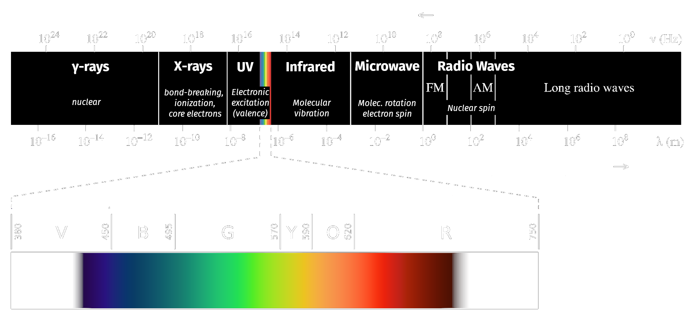

layout: true --- <h2 style = "text-align: right; font-weight: bold;">9.1.1</h2> <h1 style = "text-align: left; font-weight: bold; margin-left: 40px;">Flame Atomic Absorption</h1> <h3 style = "text-align: left; font-weight: bold; margin-left: 40px;">Theory</h3> <h5 style = "text-align: left; font-weight: bold; margin-left: 40px;">Granger 7.1, 7.2</h5> --- class: center <div style="margin-top: 100px;"></div>  .image-credit[Adapted from work by [Philip Ronan, Gringer](https://commons.wikimedia.org/wiki/File:EM_spectrumrevised.png) / [CC BY-SA](https://creativecommons.org/licenses/by-sa/3.0)] --- class: center Fraunhofer lines are due to atomic absorption in the solar atmosphere. <img src="https://upload.wikimedia.org/wikipedia/commons/2/2f/Fraunhofer_lines.svg" style = "margin-left: auto; margin-right: auto; display: block;"> .image-credit[[Wikimedia Commons](https://commons.wikimedia.org/wiki/File:Fraunhofer_lines.svg) / Public Domain] --- class: center Molecular absorption is observed in Earth's cooler atmosphere. .image-credit[[Wikimedia Commons](https://commons.wikimedia.org/wiki/File:Solar_spectrum_en.svg) / CC-SA-3.0] --- <h2 style = "text-align: right; font-weight: bold;">9.1.2</h2> <h1 style = "text-align: left; font-weight: bold; margin-left: 40px;">Flame Atomic Absorption</h1> <h3 style = "text-align: left; font-weight: bold; margin-left: 40px;">Instrumentation</h3> <h5 style = "text-align: left; font-weight: bold; margin-left: 40px;">Granger 7.4-7.6</h5> --- <h2 style = "text-align: right; font-weight: bold;">9.1.3</h2> <h1 style = "text-align: left; font-weight: bold; margin-left: 40px;">Flame Atomic Absorption</h1> <h3 style = "text-align: left; font-weight: bold; margin-left: 40px;">Quantitation</h3> <h5 style = "text-align: left; font-weight: bold; margin-left: 40px;">Granger 7.6, 7.7</h5> --- <h2 style = "text-align: right; font-weight: bold;">9.2.1</h2> <h1 style = "text-align: left; font-weight: bold; margin-left: 40px;">Atomic Emission Spectroscopy</h1> <h3 style = "text-align: left; font-weight: bold; margin-left: 40px;">Inductively Coupled Plasma-Atomic Emission Spectroscopy (ICP-AES)</h3> <h5 style = "text-align: left; font-weight: bold; margin-left: 40px;">Granger p 279-286, 289-294</h5> --- class: center An ICP torch generates a plasma at 6,000-10,000 K to produce excited state atoms. .image-credit[[Esmu Igors / Wikimedia Commons](https://en.wikipedia.org/wiki/Inductively_coupled_plasma#/media/File:ICP_torch.svg) / [CC-BY-SA 4.0](https://creativecommons.org/licenses/by-sa/4.0)] --- class: center An ***echelle grating*** provides dual dispersion and resolution of ~0.005 nm! <img src="https://www.ucolick.org/~vogt/images/hires_sm.gif" style = "margin-left: auto; margin-right: auto; display: block; height: 400px;"> .image-credit[[Dr. Steven S. Vogt](https://www.ucolick.org/~vogt/hires.html) / Fair Use] --- class: center .image-credit[[NASA](https://solarsystem.nasa.gov/resources/390/the-solar-spectrum/) / Public Domain] <!-- =============================================================================== -->